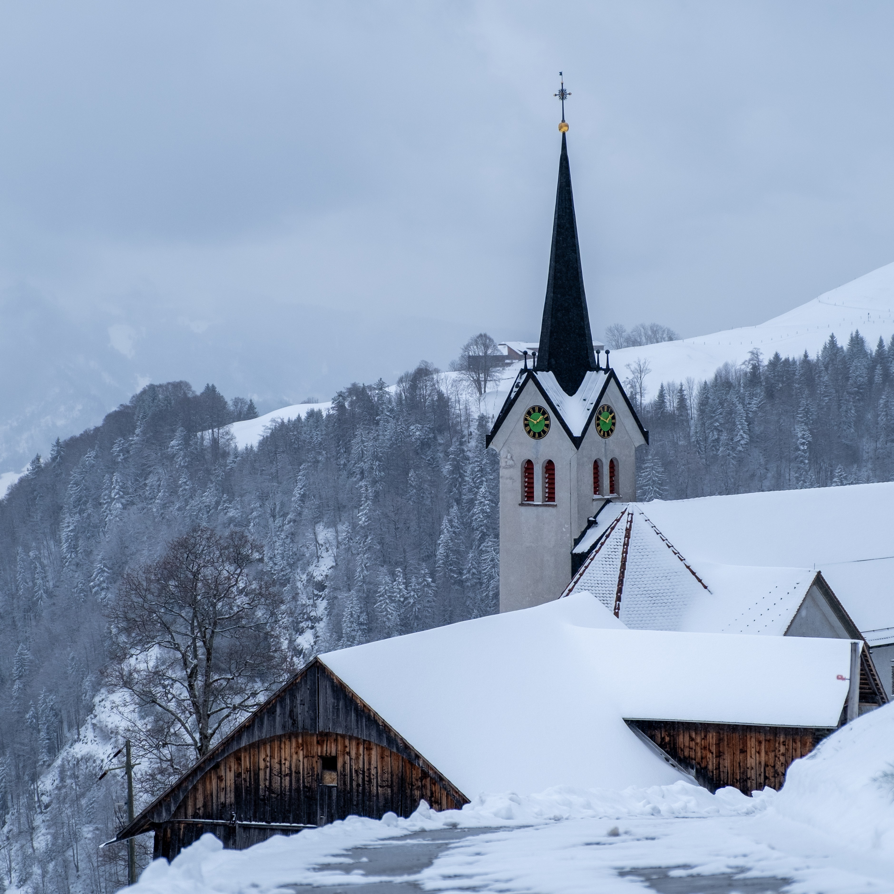
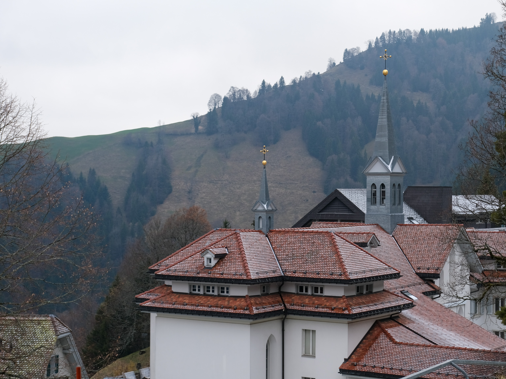

nachbar garten
Gemeinschaft erleben in den Bergen
Experiencing community in the mountains
project
projekt
- eco-social design
- Eco-Social Design
- 2nd semester
- 2. Semester
- connect module project (2 weeks)
- Connect Module Projekt (2 Wochen)
- group project
- Gruppenarbeit
role in the project
Rolle im Projekt
Planned and helped build the garden concept; planned and built the physical model for the presentation. Conducted interviews and analysed the results.
Planung und Aufbau des Gartenkonzepts. Planung und Umsetzung des physischen Modells für die Präsentation. Interviews geführt und ausgewertet.
Context
Kontext
Maria-Rickenbach has been a pilgrimage destination since 1529. Sisters from Engelberg arrived in 1857 and began perpetual adoration; the first monastery was built between 1862 and 1864. The place connects spirituality, schooling and herbal knowledge.
Seit 1529 ist Maria-Rickenbach ein bedeutender Pilgerort. 1857 trafen Schwestern aus Engelberg ein und begründeten die Tradition der Ewigen Anbetung; zwischen 1862 und 1864 entstand das erste Kloster. Der Ort verbindet Spiritualität, Bildung und Kräuterkunde.
Niederrickenbach / Maria-Rickenbach is a mountain village and Benedictine convent at 1,160 m, about 50 minutes from Lucerne. The main stakeholder is the Kapellstiftung (Chapel Foundation), which owns the water supply points, the cable car, the restaurant-hotel Pilgerhaus, and the Haus Engel – recently home to a coffee roastery. Over the past five years the foundation has focused not on "reinventing" the place but on building on what already exists. The process is accompanied by Julie Harboe, the Maria-Rickenbach tourism association and other local and regional partners.
Niederrickenbach / Maria-Rickenbach ist ein Bergdorf und Benediktinerinnenkloster auf 1.160 m Höhe, etwa 50 Minuten von Luzern entfernt. Hauptstakeholder ist die Kapellstiftung, der die Wasserentnahmestellen, die Seilbahn, das Restaurant-Hotel Pilgerhaus und das Haus Engel gehören, in dem seit kurzem eine Kaffeerösterei untergebracht ist. In den letzten fünf Jahren hat sich die Stiftung darauf konzentriert, den Ort nicht „neu zu erfinden", sondern auf dem Bestehenden aufzubauen. Der Prozess wird von Julie Harboe, dem Tourismusverband Maria-Rickenbach und weiteren lokalen und regionalen Partnern begleitet.

Interviews
Interviews
„Die Menschen suchen Orte, an denen sie sich zurückziehen, entspannen und abschalten können.“
“People seek places where they can withdraw, relax, and truly switch off.”
„Die Pflanzung spezifischer Obstbäume in Maria-Rickenbach ist grundsätzlich möglich.“
“Planting specific fruit trees in Maria-Rickenbach is fundamentally feasible.”
„Der Garten soll ein Ort der Entspannung sein. Es wird gearbeitet, gute Körpererfahrung. Das Ziel ist dabei, die Besucher:innen des Gartens in Bezug zu Natur und Umwelt sowie zur Herkunft und Saison von Lebensmitteln zu vermitteln.“
“The garden should be a place of relaxation. There is work involved—and a good physical experience. The aim is to help visitors connect with nature and the environment and with where food comes from and what is in season.”
Briefing
Briefing
The project teams were split into three tracks. Our team focused on increasing the number of fruit trees and establishing fruit-tree partnerships. Team 2 explored sustainable, locally produced alternatives to imported coffee – such as barley, buckwheat and dandelion. Team 3 developed a viable long-term business model using minimal temporary infrastructure as activity spaces, for example outdoor conferences or co-working areas connecting indoor and outdoor environments.
Die Projektteams waren aufgeteilt. Unser Team kümmerte sich um die Erhöhung der Anzahl von Obstbäumen und Obstbaum-Partnerschaften. Team 2 befasste sich mit der Förderung nachhaltiger, lokal produzierter Alternativen zu importiertem Kaffee – wie Gerste, Buchweizen oder Löwenzahn. Team 3 entwickelte ein tragfähiges langfristiges Geschäftsmodell, das die Nutzung minimaler temporärer Infrastruktur als Aktivitätsräume vorsieht, beispielsweise für Konferenzen im Freien oder Coworking-Räume, die Innen- und Außenbereiche verbinden.
Garden Model
Gartenmodell
Placement of the plants in the garden
Anordnung der Pflanzen im Garten

Site & slope
Standort & Hang
- Slope: careful zoning of which plants go where; tree care is harder on the incline.
- Snow load, wildlife and grazing cattle call for barriers and protection.
- Check roots regularly for vole damage; intensively used soil may need targeted fertilisation.
- Advantage for this altitude: a mild, sunny microclimate.
- Hanglage: Zonenplanung, welche Pflanzen wo; Baumpflege ist auf dem Hang anspruchsvoller.
- Schneelast, Wildtiere und Weidevieh erfordern Barrieren und Schutz.
- Wurzeln regelmässig auf Mäusefraß prüfen; intensiv genutzter Boden kann gezielte Düngung brauchen.
- Vorteil in dieser Höhe: mildes, sonniges Mikroklima.
Community & Learning
Community & Lernen
When gardening together, children and adults benefit from each other. Through gardening they get to know nature better, learn which foods are in season and how people used to live. They can share knowledge across generations. Regular events like workshops and harvest festivals encourage exchange and strengthen the sense of community. The garden becomes a living learning space that fosters a connection with nature and practical skills.
Beim gemeinsamen Gärtnern profitieren Kinder und Erwachsene voneinander. Durch das Gärtnern lernen sie die Natur besser kennen, erfahren, welche Lebensmittel gerade Saison haben und wie früher gelebt wurde. Außerdem können sie ihr Wissen über die verschiedenen Generationen teilen. Regelmäßige Events wie Workshops und Erntefeste fördern den Austausch und stärken das Gemeinschaftsgefühl. Der Garten wird so zu einem lebendigen Lernort, der Naturverbundenheit und handwerkliches Können fördert.
- School programmes and tree sponsorships.
- Workshops: grafting, pruning with experts.
- Communal gardening, harvest, pressing, garden festival.
- Walks and exchange with locals.
- Lehrformate für Schulen (z. B. Baumpatenschaften).
- Workshops: Veredelung, Schnittkurse mit Expert:innen.
- Gemeinsames Gärtnern und Ernten, Mosten, Gartenfest.
- Geschichtsrundgänge und Austausch mit Einheimischen.
Sustainability & Place
Nachhaltigkeit & Ort
Planting fruit trees and shrubs increases biodiversity above 1,000 metres and is adapted to the stony, shallow south-facing slope. The garden revitalises the place in the long term, preserves its history and values, and creates a model for rural innovation. It embodies "Near Neighbours": communal care as a commons practice.
Die Bepflanzung mit Obstbäumen und Sträuchern steigert die Biodiversität auf über 1.000 Metern Höhe und ist an den steinigen, flachgründigen Südhang angepasst. Der Garten belebt den Ort langfristig, bewahrt seine Geschichte und Werte und schafft ein Modell für ländliche Innovation. Er verkörpert „Near Neighbours": Die gemeinsame Pflege ist eine Commons-Praxis.

Organisation & Dynamics
Organisation & Dynamik
The association consists of committed neighbours from the wider region (reachable by public transport). Clear roles exist for set-up, maintenance and preservation. The structure is dynamic; tree care is a long-term commitment (up to 10 years until the first harvest). The yields serve the community – selling produce is secondary and can be realised at a later stage. New members keep the system alive.
Der Verein besteht aus engagierten Nachbar:innen aus der erweiterten Region (erreichbar via ÖV). Für den Aufbau, die Pflege und den Erhalt gibt es klare Rollen. Die Struktur ist dynamisch und die Baumpflege erfolgt langfristig (bis zu 10 Jahre bis zur ersten Ernte). Die Erträge dienen der Community. Der Verkauf von Produkten ist dabei von sekundärer Bedeutung und kann zu einem späteren Zeitpunkt realisiert werden. Neue Mitglieder halten das System lebendig.
Research & Potential
Forschung & Potenzial
As a test garden and pioneering project above 1,000 metres the association cooperates with partners such as ProSpecieRara and Culinarium Alpineum. Experiments in high-altitude planting secure funding through research grants. The blueprint can serve as a model for other Alpine villages – contributing to the preservation of biodiversity and a shift towards a sustainable regional economy. Cultivar choice follows biogeography and ProSpecieRara’s guidance; the full cultivar list is in the project documentation.
Als Testgarten und Pionierprojekt in über 1.000 Metern Höhe kooperiert der Verein mit Partnern wie ProSpecieRara und Culinarium Alpineum. Experimente zur Hochlagenbepflanzung sichern die Finanzierung durch Forschungsförderung. Die Blaupause kann als Vorbild für andere Alpendörfer dienen. Dabei geht es um den Erhalt der Artenvielfalt und den Wechsel zu einer nachhaltigen Wirtschaft in der Region. Die Sortenauswahl folgt den biogeografischen Bedingungen und der Expertise von ProSpecieRara; die ausführliche Sortenliste steht in der Projektdokumentation.
back to overview zurück zur Übersicht